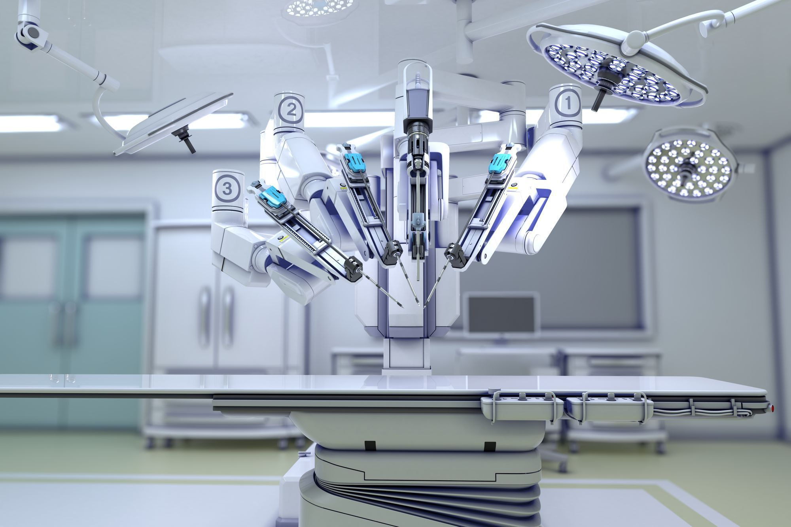

Les robots médicaux, à très faible autonomie car interviennent lors d’interventions périlleuses, sont principalement utilisé dans le domaine de la chirurgie. De nos jours, différents types de robots sont présents dans ce domaine. Certains sont au cœur de l’opération et réalise une grande partie de celle-ci eux même. D’autre assiste simplement le chirurgien dans les tâches annexes comme maintenir une caméra lors d’endoscopie par exemple. Des robots sont également utilisés lors de la rééducation des patients, des exosquelettes notamment.
Le coût malheureusement très élevé de ces mécanismes limite beaucoup leur utilisation car celle-ci n’est pas toujours très rentable.
